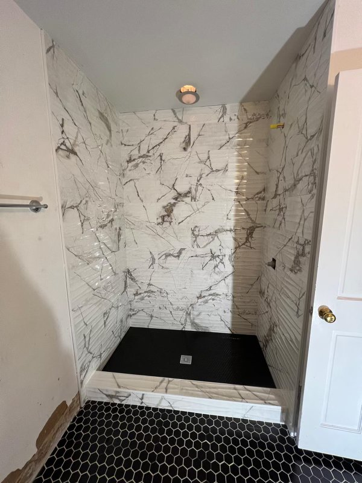
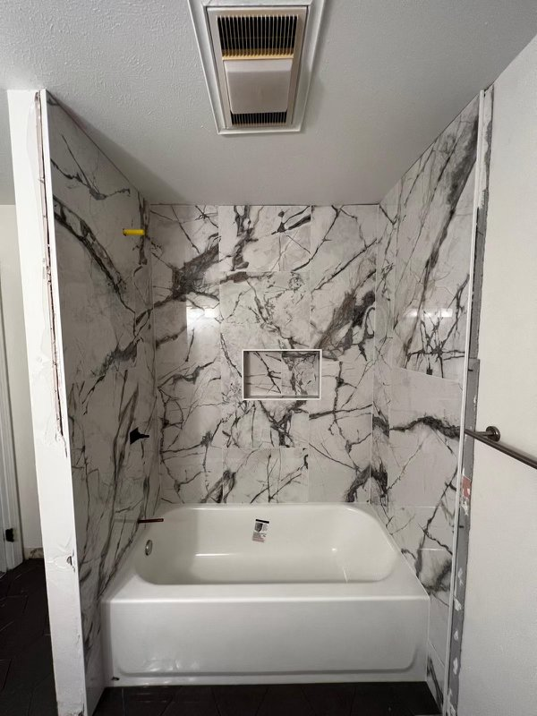
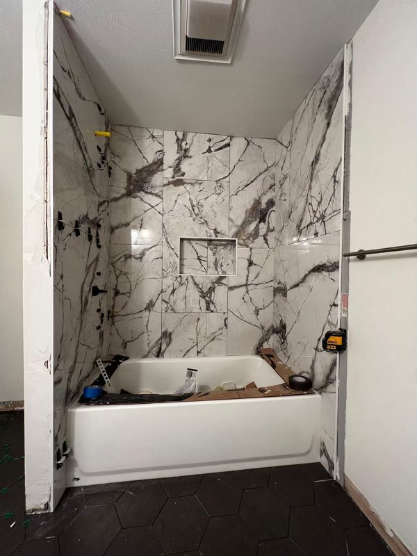
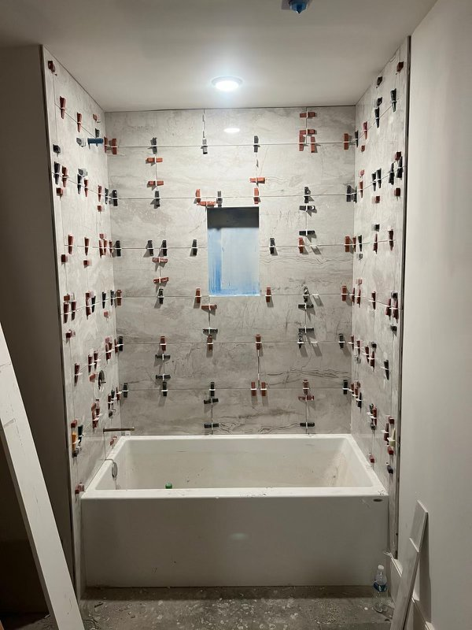
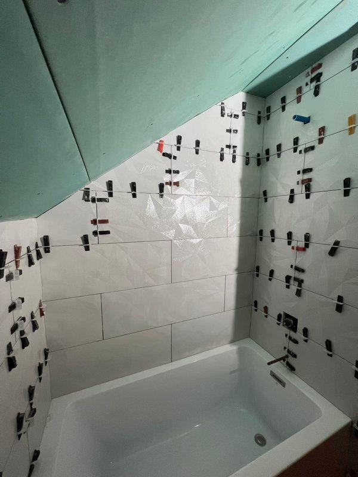
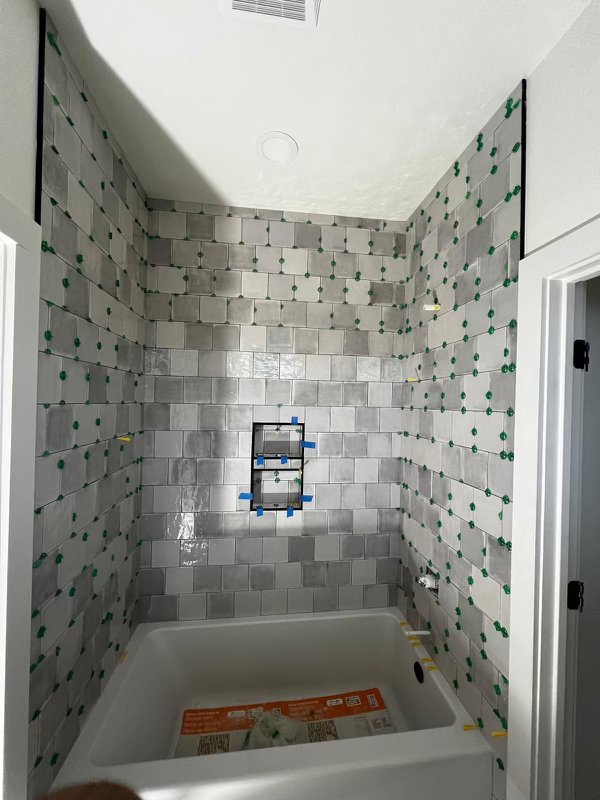
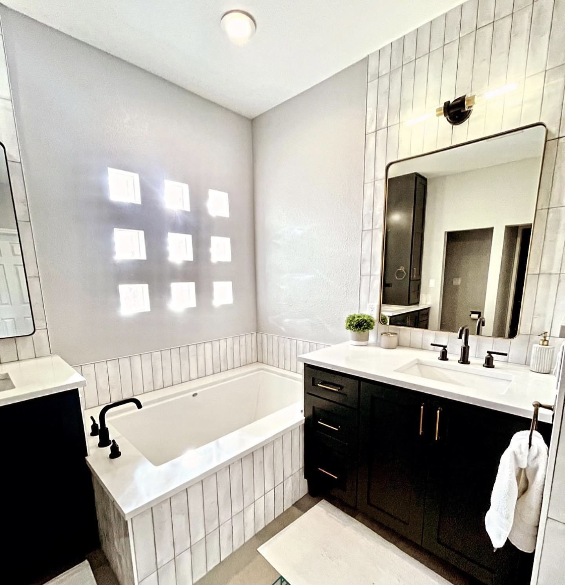
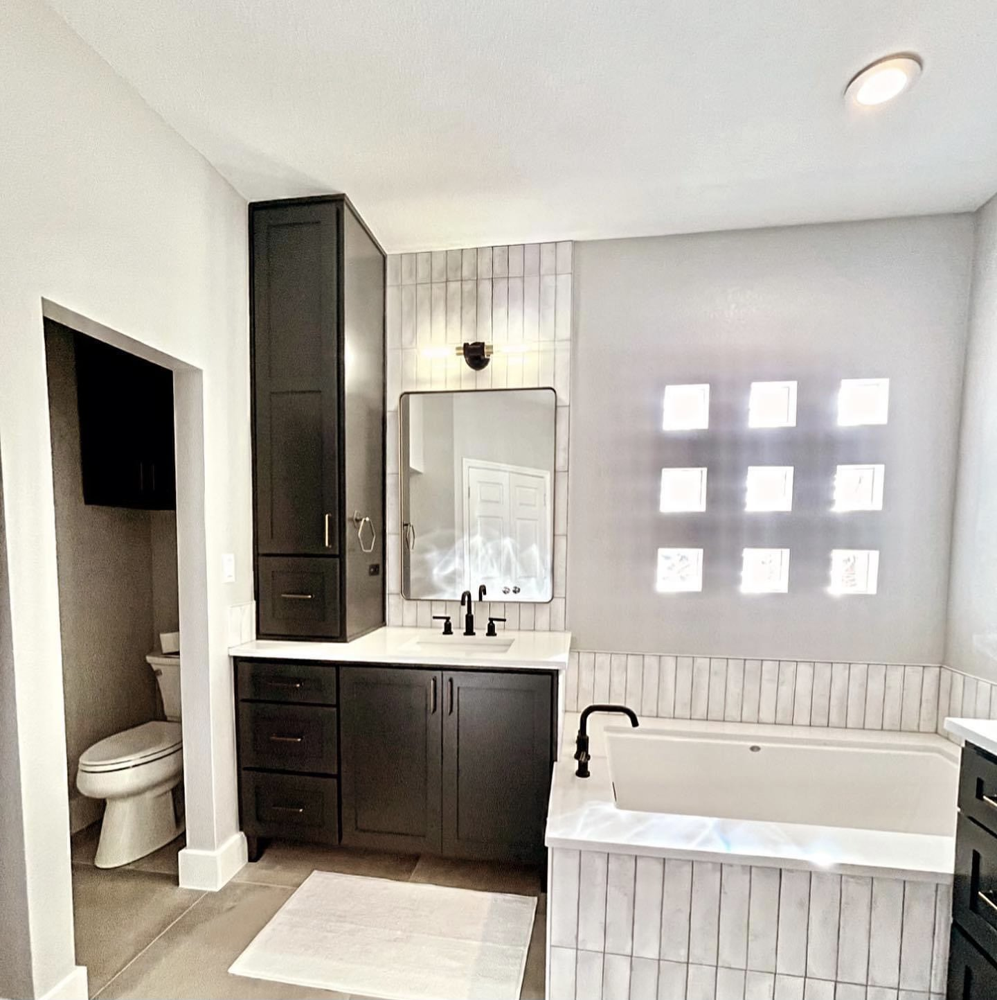

Real Transformations. Real Louisiana Homeowners.

Walk-in shower install — Lakeview

Tub-to-shower conversion — Metairie

Full bathroom remodel — Uptown
Safer, easier bathing for New Orleans homeowners. Professionally installed walk-in tubs with a low step-in, a built-in seat, and grab bars. Free $250 design consultation, 0% financing, and most installs finished in 1 to 3 days.
A real person answers, not a machine.
"Beautiful work and finished a day early. The crew was clean, on-time, and the fixed price never changed."
If getting in and out of the tub has become a daily worry, a walk-in tub can make bathing safe and independent again. TurnKey Bath Remodel installs walk-in tubs across New Orleans with a low step-in threshold, a built-in seat, grab bars, and anti-slip flooring. We are a locally owned company that does only bathrooms, with a 4.9 Google rating and hundreds of five-star reviews. You work with one local team, get a fixed-price quote before we start, and most installs are finished in 1 to 3 days.
Low step-in, built-in seat, grab bars, anti-slip flooring. Safer bathing made easy.
Soak or shower in the same space. Both options in one install.
Not a walk-in tub? We replace standard bathtubs too, with the same fixed-price quote.
Most falls at home happen in the bathroom, and stepping over a high tub wall is one of the biggest risks. A walk-in tub replaces that step-over with a low, sealed door you walk through. Ours include a built-in seat, grab bars, anti-slip flooring, and easy-reach controls, so a bath is something to look forward to again, not something to fear.


Prefer the option to shower as well as soak? We install walk-in tubs with a shower, so you get both in one space. We will walk you through the choices at your free consultation.
New Orleans bathrooms, especially in older and historic homes, can be tight. Because we are local and remodel these homes every week, we measure and plan your walk-in tub around your actual space during the free in-home consultation, so you know it fits before anything is ordered.


Walk-in tub buyers are often pressured by national companies that push a single inflated quote and a same-day discount. That is not how we work. TurnKey is locally owned, we give you a fixed-price guaranteed quote with no hidden fees, and a real person answers when you call. No scripts, no bait-and-switch.
A walk-in tub is a meaningful investment, and we are upfront about it. In most cases, Original Medicare does not cover walk-in tubs. We make it manageable with 0% financing and a fixed-price guaranteed quote, so you know the full cost before we begin and can spread it across flexible monthly payments.


TurnKey Bath Remodel is fully licensed and insured: Residential #890459, Commercial #3667. We back acrylic products with a lifetime guarantee and our work with a 10-year workmanship guarantee, and we bring 25 years of local experience to every install.
Not looking for a walk-in tub? We also replace standard bathtubs, with the same fixed-price quote and fast installation. Ask about it at your consultation.


We serve Greater New Orleans and the surrounding metro, including Lakeview, Garden District, Uptown, Metairie, Mandeville, and the Northshore.
Safer bathing, professionally installed
"Beautiful work and finished a day early. The crew was clean, on-time, and the fixed price never changed. Highly recommend."
"We had a tub-to-shower conversion done in 2 days. The team was professional and the acrylic walls look amazing. No grout to scrub."
"They walked us through everything at the consultation. No pressure, fixed quote, and the install was finished when they said it would be."
"My elderly mother needed a walk-in tub. TurnKey was patient, careful with her home, and the install was perfect. She finally feels safe bathing."
"Best bathroom remodel decision we made was going with a local team. No subcontractors, one crew, done in 3 days."
"Got 3 quotes and TurnKey was the only one who gave us a real fixed price up front. No surprises, work was top quality."
A real person answers, not a machine.